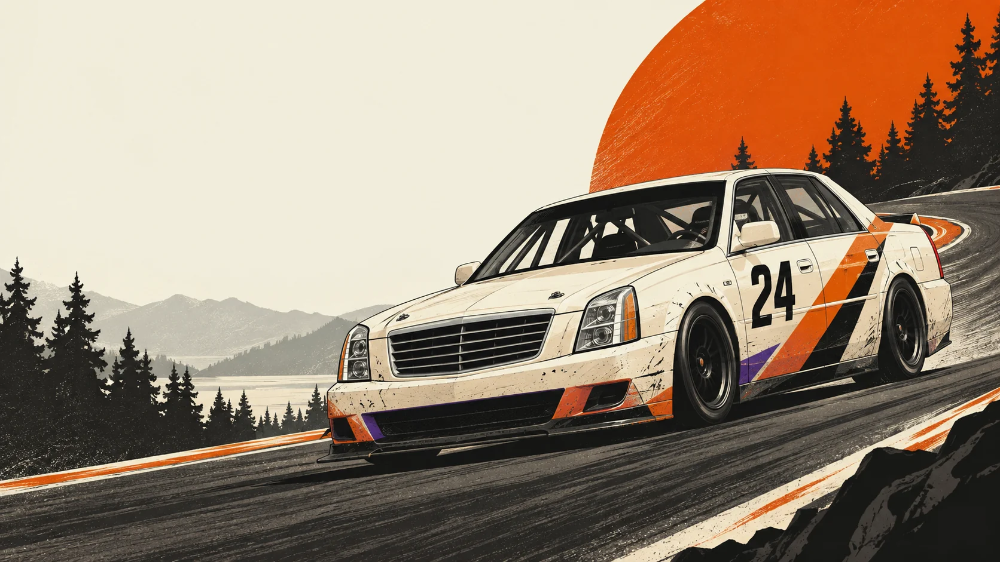

Start with the dam
Turn a road-going beater and a committed crew into a safe, unmistakable platform for impact.
Oregon State roots · Pacific Northwest racing
We’re building a 24 Hours of Lemons team that turns every scrappy lap into a stronger foundation for causes that matter.
Season one supports the Alzheimer’s Association. Donations are processed through our official Association fundraiser.

Car to build
Drivers confirmed
Lemons vehicle cap*
Cause per season
*Safety equipment and other rule-defined items are excluded from the vehicle-cost cap.
A strong foundation can carry a cause far beyond the paddock.
Beaver Dam Racing takes its name from the Oregon State roots shared by founding drivers Wade Bennett and James Grey—and from what a beaver dam represents: many small efforts joining to create a foundation where something bigger can grow.
We use the spectacle, teamwork, and glorious absurdity of endurance racing to build that foundation for charitable momentum.
Beyond the track, we want to partner with senior communities and local organizations to drive the message and work of the organizations we represent.
Our first season centers the Alzheimer’s Association. Donations flow through our official Association fundraiser rather than through our operating account, keeping the charitable ask clear and direct.
Turn a road-going beater and a committed crew into a safe, unmistakable platform for impact.
Partner with senior communities and local organizations to drive the message and work of the organizations we represent.
Use every race, story, and partnership to connect more people directly with the cause.
Season one cause
The Alzheimer’s Association’s Do What You Love program gives communities a flexible way to turn almost any activity into a fundraiser. We’re bringing a race car.
Donate to our campaign Beaver Dam Racing is independently operated. Donations are processed by the Alzheimer’s Association through our official campaign.Two founders named. Two more drivers under wraps.
Builders, operators, and drivers united by Oregon roots, questionable automotive judgment, and a very good reason to keep going.
Founding driver
An Oregon State alumnus, former nursing home administrator, and founding driver, Wade brings both Beaver roots and direct experience with residents and families affected by memory loss.
View LinkedIn profileFounding driver · Head of operations
An Oregon State alumnus and former memory care facility administrator, James is a founding driver and head of operations with a direct connection to the people and families at the heart of the cause.
View LinkedIn profileDriver confirmed
Driver confirmed
Give a dam
Every good dam starts with the right logs. We’re looking for practical partners: safety suppliers, garages, parts experts, storytellers, and mission-aligned sponsors ready to help the team—and the impact—take shape.
Message James on LinkedIn